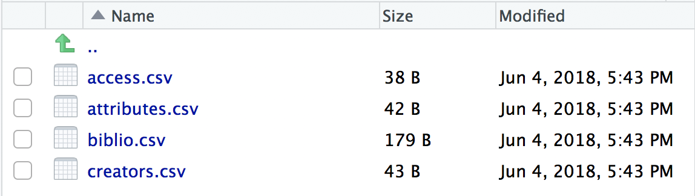
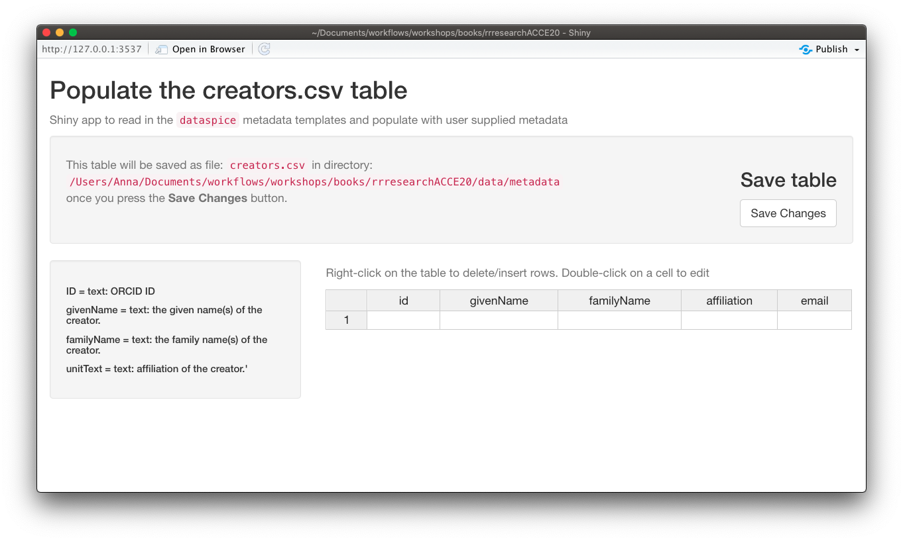
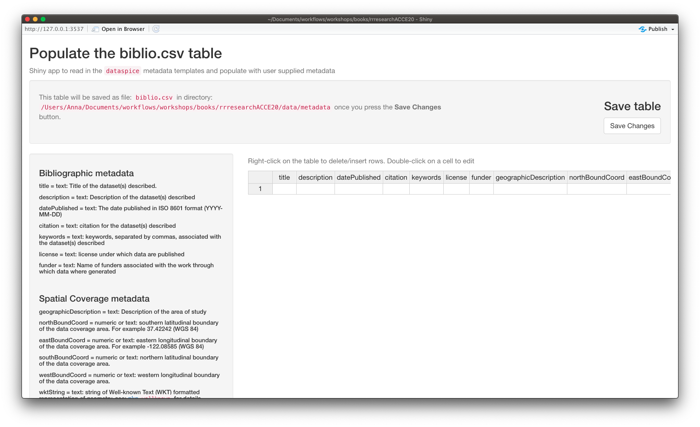
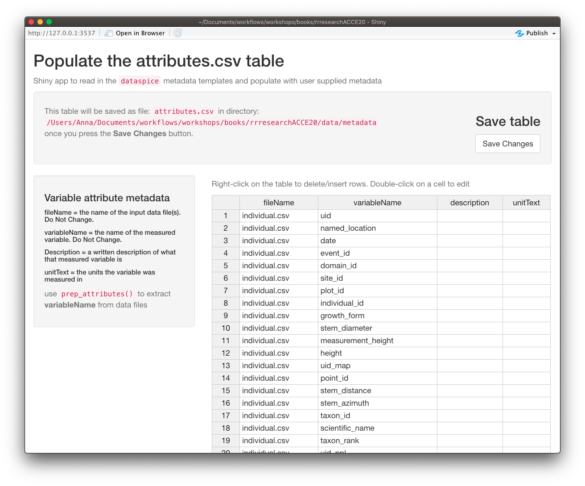

Creating metadata with dataspice
The goal of this section is to provide a practical exercise in creating metadata for an example field collected data product using package dataspice.
Understand basic metadata and why it is important.
Understand where and how to store them.
Understand how they can feed into more complex metadata objects.
dataspice workflow

Let’s load our library and start creating some metadata!
library(dataspice)Create the metadata folder
We’ll start by creating the basic metadata .csv files in which to collect metadata related to our example dataset using function dataspice::create_spice().
create_spice()This creates a metadata folder in your project’s data folder (although you can specify a different directory if required) containing 4 .csv files in which to record your metadata.

- access.csv: record details about where your data can be accessed.
- attributes.csv: record details about the variables in your data.
- biblio.csv: record dataset level metadata like title, description, licence and spatial and temoral coverage.
- creators.csv: record creator details.
Record metadata
creators.csv
The
creators.csvcontains details of the dataset creators.
Let’s start with a quick and easy file to complete, the creators. We can open and edit the file using in an interactive shiny app using dataspice::edit_creators().
Although we did not collect this data, just complete with your own details for the purposes of this tutorial.
edit_creators()
Remember to click on Save when you’re done editing.
access.csv
The
access.csvcontains details about where the data can be accessed.
Before manually completing any details in the access.csv, we can use dataspice’s dedicated function prep_access() to extract relevant information from the data files themselves.
prep_access()Next, we can use function edit_access() to view access. The final details required, namely the URL at which each dataset can be downloaded from cannot be completed now so just leave that blank for now.
Eventually it should link to a permanent identifier from which the published. data set can be downloaded from.
We can also edit details such as the name field to something more informative if required.
edit_access()Remember to click on Save when you’re done editing.
biblio.csv
The
biblio.csvcontains dataset level metadata like title, description, licence and spatial and temporal coverage.
Before we start filling this table in, we can use some base R functions to extract some of the information we require. In particular we can use function range() to extract the temporal and spatial extents of our data from the columns containing temporal and spatial data.
get temporal extent
Although dates are stored as a text string, because they are in ISO format (YYYY-MM-DD), sorting them results in correct chronological ordering. If your temporal data is not in ISO format, consider converting them (see package lubridate)
range(individual$date) ## [1] "2015-05-18" "2018-11-16"get geographical extent
The lat/lon coordinates are in decimal degrees which again are easy to sort or calculate the range in each dimension.
South/North boundaries
range(individual$decimal_latitude)## [1] 17.95570 47.16582West/East boundaries
range(individual$decimal_longitude)## [1] -99.11107 -66.82463NB: you can also supply the geographic boundaries of your data as a single well-known text string in field wktString instead of supplying the four boundary coordinates.
Geographic description
We’ll also need a geographic textual description.
Let’s check the unique values in domain_id and use those to create a geographic description.
unique(individual$domain_id)## [1] "D01" "D02" "D03" "D04" "D07" "D08" "D09"We could use NEON Domain areas D01:D09 for our geographic description.
Now that we’ve got the values for our temporal and spatial extents and decided on the geographic description, we can complete the rest of the fields in the biblio.csv file using function dataspice::edit_biblio().
edit_biblio()
🔍 metadata hunt
Complete the rest of the fields in biblio.csv
Additional information required to complete these fields can be found on the NEON data portal page for this dataset and the data-raw/wood-survey-data-master README.md
Citation: National Ecological Observatory Network. 2020. Data Products: DP1.10098.001. Provisional data downloaded from http://data.neonscience.org on 2020-01-15. Battelle, Boulder, CO, USA
Remember to click on Save when you’re done editing.
attributes.csv
The
attributes.csvcontains details about the variables in your data.
Again, dataspice provides functionality to populate the attributes.csv by extracting the variable names from our data file using function dataspice::prep_attributes().
The functions is vectorised and maps over each .csv file in our data/ folder.
prep_attributes()
All column names in individual.csv have been successfully extracted into the variableName column.
Now, we could manually complete the description and unitText fields,… or we can use a secret weapon,
NEON_vst_variables.csv in our raw data!
Let’s read it in and have a look:
variables <- readr::read_csv(here::here("data-raw", "wood-survey-data-master",
"NEON_vst_variables.csv"))##
## ── Column specification ────────────────────────────────────────────────────────
## cols(
## table = col_character(),
## fieldName = col_character(),
## description = col_character(),
## dataType = col_character(),
## units = col_character(),
## downloadPkg = col_character()
## )variables## # A tibble: 117 x 6
## table fieldName description dataType units downloadPkg
## <chr> <chr> <chr> <chr> <chr> <chr>
## 1 vst_shr… uid Unique ID within NEON databa… string <NA> basic
## 2 vst_shr… namedLocat… Name of the measurement loca… string <NA> basic
## 3 vst_shr… date Date or date and time of mea… dateTime <NA> basic
## 4 vst_shr… eventID An identifier for the set of… string <NA> basic
## 5 vst_shr… domainID Unique identifier of the NEO… string <NA> basic
## 6 vst_shr… siteID NEON site code string <NA> basic
## 7 vst_shr… plotID Plot identifier (NEON site c… string <NA> basic
## 8 vst_shr… subplotID Identifier for the NEON subp… string <NA> basic
## 9 vst_shr… nestedSubp… Numeric identifier for neste… string <NA> basic
## 10 vst_shr… groupID Identifier for a group of in… string <NA> basic
## # … with 107 more rowsAll original data variable names are contained in fieldName.
variables$fieldName## [1] "uid" "namedLocation"
## [3] "date" "eventID"
## [5] "domainID" "siteID"
## [7] "plotID" "subplotID"
## [9] "nestedSubplotID" "groupID"
## [11] "taxonID" "scientificName"
## [13] "taxonRank" "identificationReferences"
## [15] "identificationQualifier" "volumePercent"
## [17] "livePercent" "deadPercent"
## [19] "canopyArea" "meanHeight"
## [21] "remarks" "measuredBy"
## [23] "recordedBy" "dataQF"
## [25] "uid" "namedLocation"
## [27] "date" "eventID"
## [29] "domainID" "siteID"
## [31] "plotID" "subplotID"
## [33] "individualID" "tempShrubStemID"
## [35] "tagStatus" "growthForm"
## [37] "plantStatus" "stemDiameter"
## [39] "measurementHeight" "height"
## [41] "baseCrownHeight" "breakHeight"
## [43] "breakDiameter" "maxCrownDiameter"
## [45] "ninetyCrownDiameter" "canopyPosition"
## [47] "shape" "basalStemDiameter"
## [49] "basalStemDiameterMsrmntHeight" "maxBaseCrownDiameter"
## [51] "ninetyBaseCrownDiameter" "remarks"
## [53] "recordedBy" "measuredBy"
## [55] "dataQF" "uid"
## [57] "namedLocation" "date"
## [59] "domainID" "siteID"
## [61] "plotID" "plotType"
## [63] "nlcdClass" "decimalLatitude"
## [65] "decimalLongitude" "geodeticDatum"
## [67] "coordinateUncertainty" "easting"
## [69] "northing" "utmZone"
## [71] "elevation" "elevationUncertainty"
## [73] "eventID" "samplingProtocolVersion"
## [75] "treesPresent" "treesAbsentList"
## [77] "shrubsPresent" "shrubsAbsentList"
## [79] "lianasPresent" "lianasAbsentList"
## [81] "nestedSubplotAreaShrubSapling" "nestedSubplotAreaLiana"
## [83] "totalSampledAreaTrees" "totalSampledAreaShrubSapling"
## [85] "totalSampledAreaLiana" "remarks"
## [87] "measuredBy" "recordedBy"
## [89] "dataQF" "uid"
## [91] "namedLocation" "date"
## [93] "eventID" "domainID"
## [95] "siteID" "plotID"
## [97] "subplotID" "nestedSubplotID"
## [99] "pointID" "stemDistance"
## [101] "stemAzimuth" "recordType"
## [103] "individualID" "supportingStemIndividualID"
## [105] "previouslyTaggedAs" "samplingProtocolVersion"
## [107] "taxonID" "scientificName"
## [109] "taxonRank" "identificationReferences"
## [111] "morphospeciesID" "morphospeciesIDRemarks"
## [113] "identificationQualifier" "remarks"
## [115] "measuredBy" "recordedBy"
## [117] "dataQF"Notice anything inconsistent with variableName in attributes? hint: a hump
Yes you guessed it, the original fieldNames are still in camelCase.
But! It also contains description and units columns! Just what we need!
Mega-Challenge!!
Your challenge is to successfully merge the relevant contents of variables into our attributes.csv
You will need to save your merged table to data/metadata/attributes.csv.
Have a look at janitor::make_clean_names() and see if you can combine it with any other functions you’ve learned to mutate the values of columns to get round the camelCase names in variables.
Once you’ve completed your merge and saved it, use dataspice::edit_attributes() to fill in the final details for the few variables we created.
Create metadata json-ld file
Now that all our metadata files are complete, we can compile it all into a structured dataspice.json file in our data/metadata/ folder.
write_spice()install.packages(c("jsonlite", "listviewer"))jsonlite::read_json(here::here("data", "metadata", "dataspice.json")) %>%
listviewer::jsonedit()Publishing this file on the web means it will be indexed by Google Datasets search! 😃 👍
Build README site
Finally, we can use the dataspice.json file we just created to produce an informative README web page to include with our dataset for humans to enjoy! 🤩
We use function dataspice::build_site() which creates file index.html in the docs/ folder of your project (which it creates if it doesn’t already exist).
build_site()